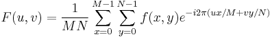

Wir definieren die zweidimensionale diskrete Fourier-Transformation (2D DFT) folgerndermaßen:

wobei f(x,y) das Eingabesignal ist.
Zusammen mit dem komplexen Ergebnis können auch Amplitude, Phase und Potenz der transformierten Daten berechnet werden.
Wenn Sie die Nullfrequenz-Komponente (auch DC-Komponente genannt) in der Mitte anzeigen, sollte das Kontrollkästchen DÜ in die Mitte verschieben aktiviert sein.
Um die 2D-FFT zu verwenden: